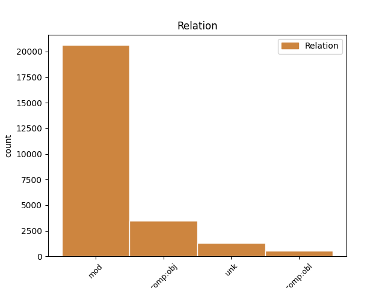
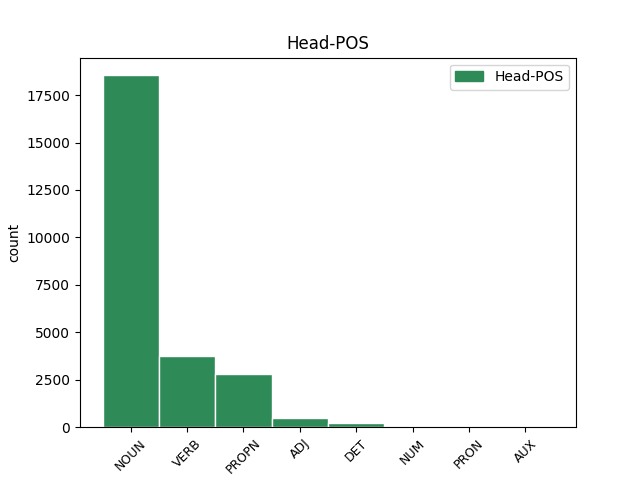
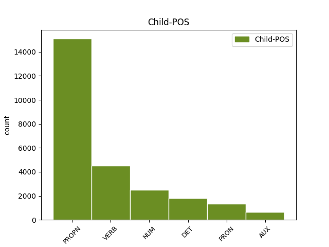

Distribution of features within this leaf



Agreement Rules sorted by frequency.
- When the dependent token is the modifer(mod) of the head token, and the dependent token is PROPN.
1 Z _ _ _ _ 0 _ _ _
2 nich _ _ _ _ 0 _ _ _
3 se _ _ _ _ 0 _ _ _
4 k _ _ _ _ 0 _ _ _
5 Zemi _ _ _ _ 0 _ _ _
6 nejvíce _ _ _ _ 0 _ _ _
7 přiblížila _ _ _ _ 0 _ _ _
8 planetka planetka NOUN NNFS1-----A---- Case=Nom|Gender=Fem|Number=Sing|Polarity=Pos 0 _ _ _
9 Toutatis Toutatis PROPN NNFSX-----A---- Foreign=Yes|Gender=Fem|NameType=Oth|Number=Sing|Polarity=Pos 8 mod _ _
10 s _ _ _ _ 0 _ _ _
11 pořadovým _ _ _ _ 0 _ _ _
12 číslem _ _ _ _ 0 _ _ _
13 4179 _ _ _ _ 0 _ _ _
14 , _ _ _ _ 0 _ _ _
15 objevená _ _ _ _ 0 _ _ _
16 francouzskými _ _ _ _ 0 _ _ _
17 astronomy _ _ _ _ 0 _ _ _
18 počátkem _ _ _ _ 0 _ _ _
19 r _ _ _ _ 0 _ _ _
20 . _ _ _ _ 0 _ _ _
21 1989 _ _ _ _ 0 _ _ _
22 . _ _ _ _ 0 _ _ _
1 Teprve _ _ _ _ 0 _ _ _
2 r _ _ _ _ 0 _ _ _
3 . _ _ _ _ 0 _ _ _
4 1991 _ _ _ _ 0 _ _ _
5 geologové _ _ _ _ 0 _ _ _
6 po _ _ _ _ 0 _ _ _
7 dlouhém _ _ _ _ 0 _ _ _
8 úsilí _ _ _ _ 0 _ _ _
9 identifikovali _ _ _ _ 0 _ _ _
10 kráter kráter NOUN NNIS4-----A---- Animacy=Inan|Case=Acc|Gender=Masc|Number=Sing|Polarity=Pos 0 _ _ _
11 , _ _ _ _ 0 _ _ _
12 který _ _ _ _ 0 _ _ _
13 vznikl vzniknout VERB VpYS---XR-AA--1 Aspect=Perf|Gender=Masc|Number=Sing|Polarity=Pos|Tense=Past|VerbForm=Part|Voice=Act 10 mod _ _
14 dopadem _ _ _ _ 0 _ _ _
15 planetky _ _ _ _ 0 _ _ _
16 s _ _ _ _ 0 _ _ _
17 průměrem _ _ _ _ 0 _ _ _
18 asi _ _ _ _ 0 _ _ _
19 10 _ _ _ _ 0 _ _ _
20 km _ _ _ _ 0 _ _ _
21 před _ _ _ _ 0 _ _ _
22 pouhými _ _ _ _ 0 _ _ _
23 65 _ _ _ _ 0 _ _ _
24 milióny _ _ _ _ 0 _ _ _
25 lety _ _ _ _ 0 _ _ _
26 . _ _ _ _ 0 _ _ _
1 Manévr _ _ _ _ 0 _ _ _
2 zmenšuje _ _ _ _ 0 _ _ _
3 riziko _ _ _ _ 0 _ _ _
4 rozbití _ _ _ _ 0 _ _ _
5 planetky _ _ _ _ 0 _ _ _
6 na _ _ _ _ 0 _ _ _
7 více _ _ _ _ 0 _ _ _
8 kusů _ _ _ _ 0 _ _ _
9 , _ _ _ _ 0 _ _ _
10 ale _ _ _ _ 0 _ _ _
11 současně _ _ _ _ 0 _ _ _
12 zvyšuje _ _ _ _ 0 _ _ _
13 energetickou _ _ _ _ 0 _ _ _
14 náročnost _ _ _ _ 0 _ _ _
15 " _ _ _ _ 0 _ _ _
16 úpravy _ _ _ _ 0 _ _ _
17 " _ _ _ _ 0 _ _ _
18 dráhy _ _ _ _ 0 _ _ _
19 zhruba _ _ _ _ 0 _ _ _
20 o _ _ _ _ 0 _ _ _
21 dva dva NUM ClYP4---------- Case=Acc|Gender=Masc|Number=Plur|NumForm=Word|NumType=Card|NumValue=1,2,3 22 mod _ LNumValue=2
22 řády řád NOUN NNIP4-----A---- Animacy=Inan|Case=Acc|Gender=Masc|Number=Plur|Polarity=Pos 0 _ _ _
23 , _ _ _ _ 0 _ _ _
24 čili _ _ _ _ 0 _ _ _
25 jsme _ _ _ _ 0 _ _ _
26 opět _ _ _ _ 0 _ _ _
27 u _ _ _ _ 0 _ _ _
28 100 _ _ _ _ 0 _ _ _
29 Mt _ _ _ _ 0 _ _ _
30 TNT _ _ _ _ 0 _ _ _
31 ! _ _ _ _ 0 _ _ _
1 Zdeněk Zdeněk PROPN NNMS1-----A---- Animacy=Anim|Case=Nom|Gender=Masc|NameType=Giv|Number=Sing|Polarity=Pos 0 _ _ _
2 Šesták _ _ _ _ 0 _ _ _
3 , _ _ _ _ 0 _ _ _
4 Nature Nature PROPN NNIXX-----A---- Animacy=Inan|Foreign=Yes|Gender=Masc|NameType=Com|Polarity=Pos 1 unk _ LGloss=(časopis)|LId=Nature-1
5 355 _ _ _ _ 0 _ _ _
6 , _ _ _ _ 0 _ _ _
7 384 _ _ _ _ 0 _ _ _
8 , _ _ _ _ 0 _ _ _
9 1992 _ _ _ _ 0 _ _ _
1 Václav _ _ _ _ 0 _ _ _
2 Hájek _ _ _ _ 0 _ _ _
3 z _ _ _ _ 0 _ _ _
4 Libočan _ _ _ _ 0 _ _ _
5 , _ _ _ _ 0 _ _ _
6 který _ _ _ _ 0 _ _ _
7 v _ _ _ _ 0 _ _ _
8 té _ _ _ _ 0 _ _ _
9 době _ _ _ _ 0 _ _ _
10 psal _ _ _ _ 0 _ _ _
11 svou _ _ _ _ 0 _ _ _
12 kroniku _ _ _ _ 0 _ _ _
13 českou _ _ _ _ 0 _ _ _
14 , _ _ _ _ 0 _ _ _
15 nedovedl _ _ _ _ 0 _ _ _
16 mylný _ _ _ _ 0 _ _ _
17 letopočet _ _ _ _ 0 _ _ _
18 1383 _ _ _ _ 0 _ _ _
19 uvést _ _ _ _ 0 _ _ _
20 v _ _ _ _ 0 _ _ _
21 soulad _ _ _ _ 0 _ _ _
22 s _ _ _ _ 0 _ _ _
23 letopočtem _ _ _ _ 0 _ _ _
24 smrti _ _ _ _ 0 _ _ _
25 Jana _ _ _ _ 0 _ _ _
26 z _ _ _ _ 0 _ _ _
27 Pomuku _ _ _ _ 0 _ _ _
28 r _ _ _ _ 0 _ _ _
29 . _ _ _ _ 0 _ _ _
30 1393 _ _ _ _ 0 _ _ _
31 jinak _ _ _ _ 0 _ _ _
32 , _ _ _ _ 0 _ _ _
33 než _ _ _ _ 0 _ _ _
34 že _ _ _ _ 0 _ _ _
35 do _ _ _ _ 0 _ _ _
36 svého _ _ _ _ 0 _ _ _
37 díla _ _ _ _ 0 _ _ _
38 uvedl uvést VERB VpYS---XR-AA--- Gender=Masc|Number=Sing|Polarity=Pos|Tense=Past|VerbForm=Part|Voice=Act 0 _ _ _
39 Jany Jan PROPN NNMP4-----A---- Animacy=Anim|Case=Acc|Gender=Masc|NameType=Giv|Number=Plur|Polarity=Pos 38 comp:obj _ _
40 dva _ _ _ _ 0 _ _ _
41 . _ _ _ _ 0 _ _ _
1 Těžké _ _ _ _ 0 _ _ _
2 mučení _ _ _ _ 0 _ _ _
3 vykonalo vykonat VERB VpNS---XR-AA--- Aspect=Perf|Gender=Neut|Number=Sing|Polarity=Pos|Tense=Past|VerbForm=Part|Voice=Act 0 _ _ _
4 své svůj DET P8NS4---------1 Case=Acc|Gender=Neut|Number=Sing|Poss=Yes|PronType=Prs|Reflex=Yes 3 comp:obj _ LGloss=(přivlast.)|LId=svůj-1
5 a _ _ _ _ 0 _ _ _
6 umírající _ _ _ _ 0 _ _ _
7 Jan _ _ _ _ 0 _ _ _
8 asi _ _ _ _ 0 _ _ _
9 nebyl _ _ _ _ 0 _ _ _
10 podpisu _ _ _ _ 0 _ _ _
11 schopen _ _ _ _ 0 _ _ _
12 . _ _ _ _ 0 _ _ _
1 Neměli _ _ _ _ 0 _ _ _
2 bychom _ _ _ _ 0 _ _ _
3 dopustit _ _ _ _ 0 _ _ _
4 , _ _ _ _ 0 _ _ _
5 aby _ _ _ _ 0 _ _ _
6 by _ _ _ _ 0 _ _ _
7 plošnými _ _ _ _ 0 _ _ _
8 redukcemi _ _ _ _ 0 _ _ _
9 činnosti _ _ _ _ 0 _ _ _
10 Akademie _ _ _ _ 0 _ _ _
11 utrpěla _ _ _ _ 0 _ _ _
12 kontinuita _ _ _ _ 0 _ _ _
13 některých _ _ _ _ 0 _ _ _
14 vědních _ _ _ _ 0 _ _ _
15 oborů _ _ _ _ 0 _ _ _
16 a _ _ _ _ 0 _ _ _
17 by _ _ _ _ 0 _ _ _
18 se _ _ _ _ 0 _ _ _
19 vynucenými _ _ _ _ 0 _ _ _
20 zásahy _ _ _ _ 0 _ _ _
21 znehodnotilo _ _ _ _ 0 _ _ _
22 to ten DET PDNS1---------- Case=Nom|Gender=Neut|Number=Sing|PronType=Dem 0 _ _ _
23 , _ _ _ _ 0 _ _ _
24 co _ _ _ _ 0 _ _ _
25 bylo být AUX VpNS---XR-AA--- Gender=Neut|Number=Sing|Polarity=Pos|Tense=Past|VerbForm=Part|Voice=Act 22 mod _ _
26 vybudováno _ _ _ _ 0 _ _ _
27 dlouholetou _ _ _ _ 0 _ _ _
28 prací _ _ _ _ 0 _ _ _
29 . _ _ _ _ 0 _ _ _
30 . _ _ _ _ 0 _ _ _
31 . _ _ _ _ 0 _ _ _
1 Právě _ _ _ _ 0 _ _ _
2 ono on PRON PPNS1--3------- Case=Nom|Gender=Neut|Number=Sing|Person=3|PronType=Prs 4 mod _ LId=on-1
3 nedávné _ _ _ _ 0 _ _ _
4 přiblížení přiblížení NOUN NNNS1-----A---- Case=Nom|Gender=Neut|Number=Sing|Polarity=Pos 0 _ _ _
5 k _ _ _ _ 0 _ _ _
6 Zemi _ _ _ _ 0 _ _ _
7 pozměnilo _ _ _ _ 0 _ _ _
8 její _ _ _ _ 0 _ _ _
9 dráhu _ _ _ _ 0 _ _ _
10 tak _ _ _ _ 0 _ _ _
11 , _ _ _ _ 0 _ _ _
12 že _ _ _ _ 0 _ _ _
13 při _ _ _ _ 0 _ _ _
14 příštích _ _ _ _ 0 _ _ _
15 setkáních _ _ _ _ 0 _ _ _
16 bude _ _ _ _ 0 _ _ _
17 od _ _ _ _ 0 _ _ _
18 Země _ _ _ _ 0 _ _ _
19 podstatně _ _ _ _ 0 _ _ _
20 dále _ _ _ _ 0 _ _ _
21 než _ _ _ _ 0 _ _ _
22 r _ _ _ _ 0 _ _ _
23 . _ _ _ _ 0 _ _ _
24 1992 _ _ _ _ 0 _ _ _
25 . _ _ _ _ 0 _ _ _
1 Věda _ _ _ _ 0 _ _ _
2 , _ _ _ _ 0 _ _ _
3 jako _ _ _ _ 0 _ _ _
4 jiné _ _ _ _ 0 _ _ _
5 systémy _ _ _ _ 0 _ _ _
6 vyšlé _ _ _ _ 0 _ _ _
7 z _ _ _ _ 0 _ _ _
8 módy _ _ _ _ 0 _ _ _
9 , _ _ _ _ 0 _ _ _
10 ničí _ _ _ _ 0 _ _ _
11 sebe _ _ _ _ 0 _ _ _
12 sama _ _ _ _ 0 _ _ _
13 " _ _ _ _ 0 _ _ _
14 , _ _ _ _ 0 _ _ _
15 zneužil _ _ _ _ 0 _ _ _
16 M _ _ _ _ 0 _ _ _
17 . _ _ _ _ 0 _ _ _
18 Crichton _ _ _ _ 0 _ _ _
19 mj _ _ _ _ 0 _ _ _
20 . _ _ _ _ 0 _ _ _
21 " _ _ _ _ 0 _ _ _
22 Gödelovu _ _ _ _ 0 _ _ _
23 větu _ _ _ _ 0 _ _ _
24 " _ _ _ _ 0 _ _ _
25 a _ _ _ _ 0 _ _ _
26 napsal napsat VERB VpYS---XR-AA--- Gender=Masc|Number=Sing|Polarity=Pos|Tense=Past|VerbForm=Part|Voice=Act 0 _ _ _
27 ( _ _ _ _ 0 _ _ _
28 v _ _ _ _ 0 _ _ _
29 překladu _ _ _ _ 0 _ _ _
30 A _ _ _ _ 0 _ _ _
31 . _ _ _ _ 0 _ _ _
32 Markoše _ _ _ _ 0 _ _ _
33 ) _ _ _ _ 0 _ _ _
34 : _ _ _ _ 0 _ _ _
35 " _ _ _ _ 0 _ _ _
36 Matematikové _ _ _ _ 0 _ _ _
37 si _ _ _ _ 0 _ _ _
38 mysleli myslet VERB VpMP---XR-AA--- Animacy=Anim|Gender=Masc|Number=Plur|Polarity=Pos|Tense=Past|VerbForm=Part|Voice=Act 26 comp:obj _ SpaceAfter=No
39 , _ _ _ _ 0 _ _ _
40 že _ _ _ _ 0 _ _ _
41 jejich _ _ _ _ 0 _ _ _
42 jazyk _ _ _ _ 0 _ _ _
43 obsahuje _ _ _ _ 0 _ _ _
44 jakousi _ _ _ _ 0 _ _ _
45 speciální _ _ _ _ 0 _ _ _
46 pravdivost _ _ _ _ 0 _ _ _
47 , _ _ _ _ 0 _ _ _
48 pramenící _ _ _ _ 0 _ _ _
49 ze _ _ _ _ 0 _ _ _
50 zákonů _ _ _ _ 0 _ _ _
51 logiky _ _ _ _ 0 _ _ _
52 . _ _ _ _ 0 _ _ _
53 . _ _ _ _ 0 _ _ _
54 . _ _ _ _ 0 _ _ _
1 Z _ _ _ _ 0 _ _ _
2 barokní _ _ _ _ 0 _ _ _
3 doby _ _ _ _ 0 _ _ _
4 máme _ _ _ _ 0 _ _ _
5 totiž _ _ _ _ 0 _ _ _
6 doloženy _ _ _ _ 0 _ _ _
7 případy _ _ _ _ 0 _ _ _
8 , _ _ _ _ 0 _ _ _
9 kdy _ _ _ _ 0 _ _ _
10 lid _ _ _ _ 0 _ _ _
11 nucený _ _ _ _ 0 _ _ _
12 chodit _ _ _ _ 0 _ _ _
13 ke _ _ _ _ 0 _ _ _
14 zpovědi _ _ _ _ 0 _ _ _
15 odříkal _ _ _ _ 0 _ _ _
16 v _ _ _ _ 0 _ _ _
17 kostele _ _ _ _ 0 _ _ _
18 zpovědní _ _ _ _ 0 _ _ _
19 zrcadlo _ _ _ _ 0 _ _ _
20 , _ _ _ _ 0 _ _ _
21 ale _ _ _ _ 0 _ _ _
22 své _ _ _ _ 0 _ _ _
23 skutečné _ _ _ _ 0 _ _ _
24 hříchy _ _ _ _ 0 _ _ _
25 sděloval sdělovat VERB VpYS---XR-AA--- Aspect=Imp|Gender=Masc|Number=Sing|Polarity=Pos|Tense=Past|VerbForm=Part|Voice=Act 0 _ _ _
26 na _ _ _ _ 0 _ _ _
27 mostě _ _ _ _ 0 _ _ _
28 Johánkovi Johánek PROPN NNMS3-----A---- Animacy=Anim|Case=Dat|Gender=Masc|NameType=Sur|Number=Sing|Polarity=Pos 25 comp:obl _ SpaceAfter=No
29 . _ _ _ _ 0 _ _ _
1 Počítačová _ _ _ _ 0 _ _ _
2 databáze _ _ _ _ 0 _ _ _
3 zbraní _ _ _ _ 0 _ _ _
4 , _ _ _ _ 0 _ _ _
5 kterou _ _ _ _ 0 _ _ _
6 jsme _ _ _ _ 0 _ _ _
7 sestavili _ _ _ _ 0 _ _ _
8 , _ _ _ _ 0 _ _ _
9 a _ _ _ _ 0 _ _ _
10 jí on PRON PPFS3--3------- Case=Dat|Gender=Fem|Number=Sing|Person=3|PronType=Prs 11 comp:obj _ LGloss=(ona)|LId=on-1
11 odpovídající odpovídající ADJ AGFS1-----A---- Aspect=Imp|Case=Nom|Gender=Fem|Number=Sing|Polarity=Pos|Tense=Pres|VerbForm=Part|Voice=Act 0 _ _ _
12 sbírka _ _ _ _ 0 _ _ _
13 následně _ _ _ _ 0 _ _ _
14 testovaných _ _ _ _ 0 _ _ _
15 předmětů _ _ _ _ 0 _ _ _
16 zahrnovala _ _ _ _ 0 _ _ _
17 768 _ _ _ _ 0 _ _ _
18 položek _ _ _ _ 0 _ _ _
19 , _ _ _ _ 0 _ _ _
20 od _ _ _ _ 0 _ _ _
21 arkebuz _ _ _ _ 0 _ _ _
22 až _ _ _ _ 0 _ _ _
23 po _ _ _ _ 0 _ _ _
24 žehnáčky _ _ _ _ 0 _ _ _
25 ( _ _ _ _ 0 _ _ _
26 krajovou _ _ _ _ 0 _ _ _
27 varietu _ _ _ _ 0 _ _ _
28 husitského _ _ _ _ 0 _ _ _
29 kropáče _ _ _ _ 0 _ _ _
30 , _ _ _ _ 0 _ _ _
31 vyznačenou _ _ _ _ 0 _ _ _
32 posunutím _ _ _ _ 0 _ _ _
33 těžiště _ _ _ _ 0 _ _ _
34 o _ _ _ _ 0 _ _ _
35 1 _ _ _ _ 0 _ _ _
36 / _ _ _ _ 0 _ _ _
37 7 _ _ _ _ 0 _ _ _
38 délky _ _ _ _ 0 _ _ _
39 rukověti _ _ _ _ 0 _ _ _
40 směrem _ _ _ _ 0 _ _ _
41 k _ _ _ _ 0 _ _ _
42 ježkovi _ _ _ _ 0 _ _ _
43 ) _ _ _ _ 0 _ _ _
44 a _ _ _ _ 0 _ _ _
45 žahačskou _ _ _ _ 0 _ _ _
46 armaturu _ _ _ _ 0 _ _ _
47 . _ _ _ _ 0 _ _ _
1 Armáda _ _ _ _ 0 _ _ _
2 svou svůj DET P8FS4---------1 Case=Acc|Gender=Fem|Number=Sing|Poss=Yes|PronType=Prs|Reflex=Yes 3 mod _ LGloss=(přivlast.)|LId=svůj-1
3 strukturou struktura NOUN NNFS7-----A---- Case=Ins|Gender=Fem|Number=Sing|Polarity=Pos 0 _ _ _
4 agresivitu _ _ _ _ 0 _ _ _
5 netlumí _ _ _ _ 0 _ _ _
6 , _ _ _ _ 0 _ _ _
7 pouze _ _ _ _ 0 _ _ _
8 přenáší _ _ _ _ 0 _ _ _
9 z _ _ _ _ 0 _ _ _
10 vyšších _ _ _ _ 0 _ _ _
11 na _ _ _ _ 0 _ _ _
12 nižší _ _ _ _ 0 _ _ _
13 a _ _ _ _ 0 _ _ _
14 z _ _ _ _ 0 _ _ _
15 těch _ _ _ _ 0 _ _ _
16 na _ _ _ _ 0 _ _ _
17 nepřítele _ _ _ _ 0 _ _ _
18 či _ _ _ _ 0 _ _ _
19 nepřátelské _ _ _ _ 0 _ _ _
20 civilní _ _ _ _ 0 _ _ _
21 obyvatelstvo _ _ _ _ 0 _ _ _
22 . _ _ _ _ 0 _ _ _
1 Tři _ _ _ _ 0 _ _ _
2 menší _ _ _ _ 0 _ _ _
3 zuby _ _ _ _ 0 _ _ _
4 jsou _ _ _ _ 0 _ _ _
5 spodní _ _ _ _ 0 _ _ _
6 stoličky _ _ _ _ 0 _ _ _
7 M _ _ _ _ 0 _ _ _
8 1 _ _ _ _ 0 _ _ _
9 - _ _ _ _ 0 _ _ _
10 3 _ _ _ _ 0 _ _ _
11 , _ _ _ _ 0 _ _ _
12 jedna jeden NUM ClFS1---------- Case=Nom|Gender=Fem|Number=Sing|NumForm=Word|NumType=Card|NumValue=1,2,3 16 unk _ LNumValue=1
13 větší _ _ _ _ 0 _ _ _
14 je _ _ _ _ 0 _ _ _
15 horní _ _ _ _ 0 _ _ _
16 stolička stolička NOUN NNFS1-----A---- Case=Nom|Gender=Fem|Number=Sing|Polarity=Pos 0 _ _ _
17 M _ _ _ _ 0 _ _ _
18 1 _ _ _ _ 0 _ _ _
19 - _ _ _ _ 0 _ _ _
20 3 _ _ _ _ 0 _ _ _
21 . _ _ _ _ 0 _ _ _
1 Asi _ _ _ _ 0 _ _ _
2 by _ _ _ _ 0 _ _ _
3 se _ _ _ _ 0 _ _ _
4 tak _ _ _ _ 0 _ _ _
5 mělo _ _ _ _ 0 _ _ _
6 dít _ _ _ _ 0 _ _ _
7 po _ _ _ _ 0 _ _ _
8 vědeckých _ _ _ _ 0 _ _ _
9 odvětvích _ _ _ _ 0 _ _ _
10 , _ _ _ _ 0 _ _ _
11 protože _ _ _ _ 0 _ _ _
12 ta ten DET PDNP1---------- Case=Nom|Gender=Neut|Number=Plur|PronType=Dem 15 unk _ _
13 jsou _ _ _ _ 0 _ _ _
14 navzájem _ _ _ _ 0 _ _ _
15 nesrovnatelná srovnatelný ADJ AANP1----1N---- Case=Nom|Degree=Pos|Gender=Neut|Number=Plur|Polarity=Neg 0 _ _ _
16 a _ _ _ _ 0 _ _ _
17 jen _ _ _ _ 0 _ _ _
18 těžko _ _ _ _ 0 _ _ _
19 mohou _ _ _ _ 0 _ _ _
20 na _ _ _ _ 0 _ _ _
21 základě _ _ _ _ 0 _ _ _
22 vlastní _ _ _ _ 0 _ _ _
23 zkušenosti _ _ _ _ 0 _ _ _
24 posoudit _ _ _ _ 0 _ _ _
25 potřeby _ _ _ _ 0 _ _ _
26 těch _ _ _ _ 0 _ _ _
27 ostatních _ _ _ _ 0 _ _ _
28 . _ _ _ _ 0 _ _ _
1 Jeden jeden NUM ClIS4---------- Animacy=Inan|Case=Acc|Gender=Masc|Number=Sing|NumForm=Word|NumType=Card|NumValue=1,2,3 11 comp:obj _ LNumValue=1
2 z _ _ _ _ 0 _ _ _
3 nejvýstižnějších _ _ _ _ 0 _ _ _
4 popisů _ _ _ _ 0 _ _ _
5 skleníkového _ _ _ _ 0 _ _ _
6 efektu _ _ _ _ 0 _ _ _
7 , _ _ _ _ 0 _ _ _
8 jaký _ _ _ _ 0 _ _ _
9 znám _ _ _ _ 0 _ _ _
10 , _ _ _ _ 0 _ _ _
11 přinesl přinést VERB VpYS---XR-AA--- Gender=Masc|Number=Sing|Polarity=Pos|Tense=Past|VerbForm=Part|Voice=Act 0 _ _ _
12 Vesmír _ _ _ _ 0 _ _ _
13 70 _ _ _ _ 0 _ _ _
14 , _ _ _ _ 0 _ _ _
15 546 _ _ _ _ 0 _ _ _
16 , _ _ _ _ 0 _ _ _
17 1991 _ _ _ _ 0 _ _ _
18 / _ _ _ _ 0 _ _ _
19 10 _ _ _ _ 0 _ _ _
20 . _ _ _ _ 0 _ _ _
1 ( _ _ _ _ 0 _ _ _
2 Zpěv zpěv NOUN NNIS1-----A---- Animacy=Inan|Case=Nom|Gender=Masc|Number=Sing|Polarity=Pos 0 _ _ _
3 II _ _ _ _ 0 _ _ _
4 . _ _ _ _ 0 _ _ _
5 , _ _ _ _ 0 _ _ _
6 verš _ _ _ _ 0 _ _ _
7 291 _ _ _ _ 0 _ _ _
8 , _ _ _ _ 0 _ _ _
9 ) _ _ _ _ 0 _ _ _
10 přel přít VERB VpYS---XR-AA--- Gender=Masc|Number=Sing|Polarity=Pos|Tense=Past|VerbForm=Part|Voice=Act 2 unk _ SpaceAfter=No
11 . _ _ _ _ 0 _ _ _
12 Julie _ _ _ _ 0 _ _ _
13 Nováková _ _ _ _ 0 _ _ _
1 " _ _ _ _ 0 _ _ _
2 Soupeř _ _ _ _ 0 _ _ _
3 byl být AUX VpYS---XR-AA--- Gender=Masc|Number=Sing|Polarity=Pos|Tense=Past|VerbForm=Part|Voice=Act 17 comp:obj _ _
4 o _ _ _ _ 0 _ _ _
5 třídu _ _ _ _ 0 _ _ _
6 lepší _ _ _ _ 0 _ _ _
7 , _ _ _ _ 0 _ _ _
8 já _ _ _ _ 0 _ _ _
9 navíc _ _ _ _ 0 _ _ _
10 ve _ _ _ _ 0 _ _ _
11 druhém _ _ _ _ 0 _ _ _
12 setu _ _ _ _ 0 _ _ _
13 fyzicky _ _ _ _ 0 _ _ _
14 odpadl _ _ _ _ 0 _ _ _
15 , _ _ _ _ 0 _ _ _
16 " _ _ _ _ 0 _ _ _
17 řekl říci VERB VpYS---XR-AA--- Aspect=Perf|Gender=Masc|Number=Sing|Polarity=Pos|Tense=Past|VerbForm=Part|Voice=Act 0 _ _ _
18 bývalý _ _ _ _ 0 _ _ _
19 daviscupový _ _ _ _ 0 _ _ _
20 reprezentant _ _ _ _ 0 _ _ _
21 ke _ _ _ _ 0 _ _ _
22 své _ _ _ _ 0 _ _ _
23 prohře _ _ _ _ 0 _ _ _
24 . _ _ _ _ 0 _ _ _
1 Udření _ _ _ _ 0 _ _ _
2 venkovští _ _ _ _ 0 _ _ _
3 lidé _ _ _ _ 0 _ _ _
4 , _ _ _ _ 0 _ _ _
5 které který DET P4YP4---------- Case=Acc|Gender=Masc|Number=Plur|PronType=Int,Rel 7 comp:obl _ _
6 jsem _ _ _ _ 0 _ _ _
7 vídal vídat VERB VpYS---XR-AA--- Aspect=Imp|Gender=Masc|Number=Sing|Polarity=Pos|Tense=Past|VerbForm=Part|Voice=Act 0 _ _ _
8 usednout _ _ _ _ 0 _ _ _
9 na _ _ _ _ 0 _ _ _
10 mez _ _ _ _ 0 _ _ _
11 a _ _ _ _ 0 _ _ _
12 říci _ _ _ _ 0 _ _ _
13 dítěti _ _ _ _ 0 _ _ _
14 nad _ _ _ _ 0 _ _ _
15 krajinou _ _ _ _ 0 _ _ _
16 : _ _ _ _ 0 _ _ _
17 " _ _ _ _ 0 _ _ _
18 Podívej _ _ _ _ 0 _ _ _
19 se _ _ _ _ 0 _ _ _
20 na _ _ _ _ 0 _ _ _
21 to _ _ _ _ 0 _ _ _
22 . _ _ _ _ 0 _ _ _
23 . _ _ _ _ 0 _ _ _
24 . _ _ _ _ 0 _ _ _
25 " _ _ _ _ 0 _ _ _
1 " _ _ _ _ 0 _ _ _
2 Uložil _ _ _ _ 0 _ _ _
3 jsem _ _ _ _ 0 _ _ _
4 klíče _ _ _ _ 0 _ _ _
5 do _ _ _ _ 0 _ _ _
6 svého _ _ _ _ 0 _ _ _
7 sejfu _ _ _ _ 0 _ _ _
8 a _ _ _ _ 0 _ _ _
9 nikomu nikdo PRON PWM-3---------- Animacy=Anim|Case=Dat|Gender=Masc|PronType=Neg 13 comp:obl _ _
10 jsem _ _ _ _ 0 _ _ _
11 je _ _ _ _ 0 _ _ _
12 nikdy _ _ _ _ 0 _ _ _
13 nepůjčil půjčit VERB VpYS---XR-NA--- Aspect=Perf|Gender=Masc|Number=Sing|Polarity=Neg|Tense=Past|VerbForm=Part|Voice=Act 0 _ _ _
14 . _ _ _ _ 0 _ _ _
1 Manželé _ _ _ _ 0 _ _ _
2 Hilgertovi _ _ _ _ 0 _ _ _
3 , _ _ _ _ 0 _ _ _
4 Štěpánka _ _ _ _ 0 _ _ _
5 a _ _ _ _ 0 _ _ _
6 Luboš _ _ _ _ 0 _ _ _
7 , _ _ _ _ 0 _ _ _
8 byť _ _ _ _ 0 _ _ _
9 ve _ _ _ _ 0 _ _ _
10 Světovém _ _ _ _ 0 _ _ _
11 poháru _ _ _ _ 0 _ _ _
12 osobnosti _ _ _ _ 0 _ _ _
13 nejpřednější přední ADJ AAFP1----3A---- Case=Nom|Degree=Sup|Gender=Fem|Number=Plur|Polarity=Pos 0 _ _ _
14 ( _ _ _ _ 0 _ _ _
15 ona on PRON PPFS1--3------- Case=Nom|Gender=Fem|Number=Sing|Person=3|PronType=Prs 13 unk _ LId=on-1
16 loni _ _ _ _ 0 _ _ _
17 první _ _ _ _ 0 _ _ _
18 , _ _ _ _ 0 _ _ _
19 on _ _ _ _ 0 _ _ _
20 druhý _ _ _ _ 0 _ _ _
21 ) _ _ _ _ 0 _ _ _
22 zůstali _ _ _ _ 0 _ _ _
23 opět _ _ _ _ 0 _ _ _
24 bez _ _ _ _ 0 _ _ _
25 medaile _ _ _ _ 0 _ _ _
26 . _ _ _ _ 0 _ _ _
1 " _ _ _ _ 0 _ _ _
2 Požádal požádat VERB VpYS---XR-AA--- Aspect=Perf|Gender=Masc|Number=Sing|Polarity=Pos|Tense=Past|VerbForm=Part|Voice=Act 0 _ _ _
3 jsem _ _ _ _ 0 _ _ _
4 tenkrát _ _ _ _ 0 _ _ _
5 jednoho jeden NUM ClMS4---------- Animacy=Anim|Case=Acc|Gender=Masc|Number=Sing|NumForm=Word|NumType=Card|NumValue=1,2,3 2 comp:obl _ LNumValue=1
6 z _ _ _ _ 0 _ _ _
7 našich _ _ _ _ 0 _ _ _
8 funkcionářů _ _ _ _ 0 _ _ _
9 , _ _ _ _ 0 _ _ _
10 zda _ _ _ _ 0 _ _ _
11 bych _ _ _ _ 0 _ _ _
12 nemohl _ _ _ _ 0 _ _ _
13 dostat _ _ _ _ 0 _ _ _
14 za _ _ _ _ 0 _ _ _
15 tuhle _ _ _ _ 0 _ _ _
16 motorku _ _ _ _ 0 _ _ _
17 třeba _ _ _ _ 0 _ _ _
18 tři _ _ _ _ 0 _ _ _
19 metry _ _ _ _ 0 _ _ _
20 látky _ _ _ _ 0 _ _ _
21 . _ _ _ _ 0 _ _ _
Disagree Examples:
1 Aby _ _ _ _ 0 _ _ _
2 by _ _ _ _ 0 _ _ _
3 byly _ _ _ _ 0 _ _ _
4 údaje _ _ _ _ 0 _ _ _
5 o _ _ _ _ 0 _ _ _
6 přenosové _ _ _ _ 0 _ _ _
7 rychlosti _ _ _ _ 0 _ _ _
8 objektivně _ _ _ _ 0 _ _ _
9 srovnatelné _ _ _ _ 0 _ _ _
10 , _ _ _ _ 0 _ _ _
11 vydala _ _ _ _ 0 _ _ _
12 mezinárodní _ _ _ _ 0 _ _ _
13 normalizační _ _ _ _ 0 _ _ _
14 organizace _ _ _ _ 0 _ _ _
15 CCITT _ _ _ _ 0 _ _ _
16 normalizovaný _ _ _ _ 0 _ _ _
17 dopis _ _ _ _ 0 _ _ _
18 na _ _ _ _ 0 _ _ _
19 formátu formát NOUN NNIS6-----A---1 Animacy=Inan|Case=Loc|Gender=Masc|Number=Sing|Polarity=Pos 0 _ _ _
20 A A PROPN NNFXX-----A---8 Abbr=Yes|Gender=Fem|NameType=Giv|Polarity=Pos 19 mod _ LId=A-0|SpaceAfter=No
21 4 _ _ _ _ 0 _ _ _
22 , _ _ _ _ 0 _ _ _
23 který _ _ _ _ 0 _ _ _
24 se _ _ _ _ 0 _ _ _
25 přenáší _ _ _ _ 0 _ _ _
26 při _ _ _ _ 0 _ _ _
27 laboratorních _ _ _ _ 0 _ _ _
28 zkouškách _ _ _ _ 0 _ _ _
29 nejvyšší _ _ _ _ 0 _ _ _
30 rychlostí _ _ _ _ 0 _ _ _
31 , _ _ _ _ 0 _ _ _
32 jaké _ _ _ _ 0 _ _ _
33 je _ _ _ _ 0 _ _ _
34 přístroj _ _ _ _ 0 _ _ _
35 schopen _ _ _ _ 0 _ _ _
36 . _ _ _ _ 0 _ _ _
1 Aby _ _ _ _ 0 _ _ _
2 by _ _ _ _ 0 _ _ _
3 byly _ _ _ _ 0 _ _ _
4 údaje _ _ _ _ 0 _ _ _
5 o _ _ _ _ 0 _ _ _
6 přenosové _ _ _ _ 0 _ _ _
7 rychlosti _ _ _ _ 0 _ _ _
8 objektivně _ _ _ _ 0 _ _ _
9 srovnatelné _ _ _ _ 0 _ _ _
10 , _ _ _ _ 0 _ _ _
11 vydala _ _ _ _ 0 _ _ _
12 mezinárodní _ _ _ _ 0 _ _ _
13 normalizační _ _ _ _ 0 _ _ _
14 organizace _ _ _ _ 0 _ _ _
15 CCITT _ _ _ _ 0 _ _ _
16 normalizovaný _ _ _ _ 0 _ _ _
17 dopis _ _ _ _ 0 _ _ _
18 na _ _ _ _ 0 _ _ _
19 formátu _ _ _ _ 0 _ _ _
20 A _ _ _ _ 0 _ _ _
21 4 _ _ _ _ 0 _ _ _
22 , _ _ _ _ 0 _ _ _
23 který _ _ _ _ 0 _ _ _
24 se _ _ _ _ 0 _ _ _
25 přenáší _ _ _ _ 0 _ _ _
26 při _ _ _ _ 0 _ _ _
27 laboratorních _ _ _ _ 0 _ _ _
28 zkouškách _ _ _ _ 0 _ _ _
29 nejvyšší _ _ _ _ 0 _ _ _
30 rychlostí _ _ _ _ 0 _ _ _
31 , _ _ _ _ 0 _ _ _
32 jaké jaký DET P4FS2---------- Case=Gen|Gender=Fem|Number=Sing|PronType=Int,Rel 35 comp:obj _ _
33 je _ _ _ _ 0 _ _ _
34 přístroj _ _ _ _ 0 _ _ _
35 schopen schopný ADJ ACYS------A---- Gender=Masc|Number=Sing|Polarity=Pos|Variant=Short 0 _ _ _
36 . _ _ _ _ 0 _ _ _
1 Stalo _ _ _ _ 0 _ _ _
2 se _ _ _ _ 0 _ _ _
3 mi _ _ _ _ 0 _ _ _
4 , _ _ _ _ 0 _ _ _
5 že _ _ _ _ 0 _ _ _
6 při _ _ _ _ 0 _ _ _
7 jednání _ _ _ _ 0 _ _ _
8 potřeboval _ _ _ _ 0 _ _ _
9 můj _ _ _ _ 0 _ _ _
10 partner _ _ _ _ 0 _ _ _
11 nahlédnout _ _ _ _ 0 _ _ _
12 do _ _ _ _ 0 _ _ _
13 dokumentu _ _ _ _ 0 _ _ _
14 , _ _ _ _ 0 _ _ _
15 který _ _ _ _ 0 _ _ _
16 měl _ _ _ _ 0 _ _ _
17 u _ _ _ _ 0 _ _ _
18 sebe _ _ _ _ 0 _ _ _
19 jeho _ _ _ _ 0 _ _ _
20 kolega _ _ _ _ 0 _ _ _
21 , _ _ _ _ 0 _ _ _
22 sedící _ _ _ _ 0 _ _ _
23 ve _ _ _ _ 0 _ _ _
24 stejné _ _ _ _ 0 _ _ _
25 budově _ _ _ _ 0 _ _ _
26 , _ _ _ _ 0 _ _ _
27 jenže _ _ _ _ 0 _ _ _
28 o _ _ _ _ 0 _ _ _
29 dvě dva NUM ClHP4---------- Case=Acc|Gender=Fem,Neut|Number=Plur|NumForm=Word|NumType=Card|NumValue=1,2,3 30 mod _ LNumValue=2
30 patra patro NOUN NNNP4-----A---- Case=Acc|Gender=Neut|Number=Plur|Polarity=Pos 0 _ _ _
31 níže _ _ _ _ 0 _ _ _
32 . _ _ _ _ 0 _ _ _
1 Telefonicky _ _ _ _ 0 _ _ _
2 jej on PRON PPZS4--3------2 Case=Acc|Gender=Masc,Neut|Number=Sing|Person=3|PronType=Prs|Style=Arch 3 comp:obl _ LId=on-1
3 požádal požádat VERB VpYS---XR-AA--- Aspect=Perf|Gender=Masc|Number=Sing|Polarity=Pos|Tense=Past|VerbForm=Part|Voice=Act 0 _ _ _
4 , _ _ _ _ 0 _ _ _
5 aby _ _ _ _ 0 _ _ _
6 by _ _ _ _ 0 _ _ _
7 mu _ _ _ _ 0 _ _ _
8 dokument _ _ _ _ 0 _ _ _
9 poslal _ _ _ _ 0 _ _ _
10 . _ _ _ _ 0 _ _ _
1 Telefonicky _ _ _ _ 0 _ _ _
2 jej _ _ _ _ 0 _ _ _
3 požádal _ _ _ _ 0 _ _ _
4 , _ _ _ _ 0 _ _ _
5 aby _ _ _ _ 0 _ _ _
6 by _ _ _ _ 0 _ _ _
7 mu on PRON PHZS3--3------- Case=Dat|Gender=Masc,Neut|Number=Sing|Person=3|PronType=Prs|Variant=Short 9 comp:obl _ LId=on-1
8 dokument _ _ _ _ 0 _ _ _
9 poslal poslat VERB VpYS---XR-AA--- Gender=Masc|Number=Sing|Polarity=Pos|Tense=Past|VerbForm=Part|Voice=Act 0 _ _ _
10 . _ _ _ _ 0 _ _ _